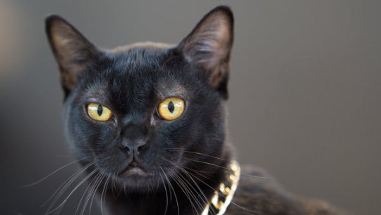

კატა
12.12.23
ძველ ეგვიპტეში ცხოველების თაყვანისცემა ცხოვრების წესად იყო ქცეული, მაგრამ სათაყვანებელ ცხოველებს შორის კატას განსაკუთრებული ადგილი ეჭირა, რადგან ის გაიგივებული იყო მთვარის ღვთაებასთან, ნაყოფიერების და მშობიარობის ღმერთთან სახელად ბასტა. როცა კატა კვდებოდა, მისი პატრონი დიდი მწუხარების ნიშნად იპარსავდა წარბებს.
